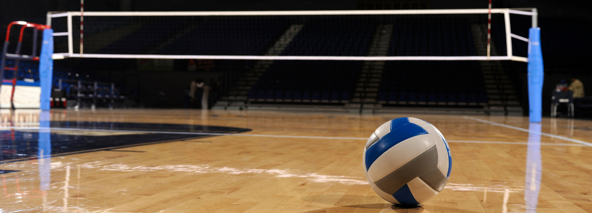
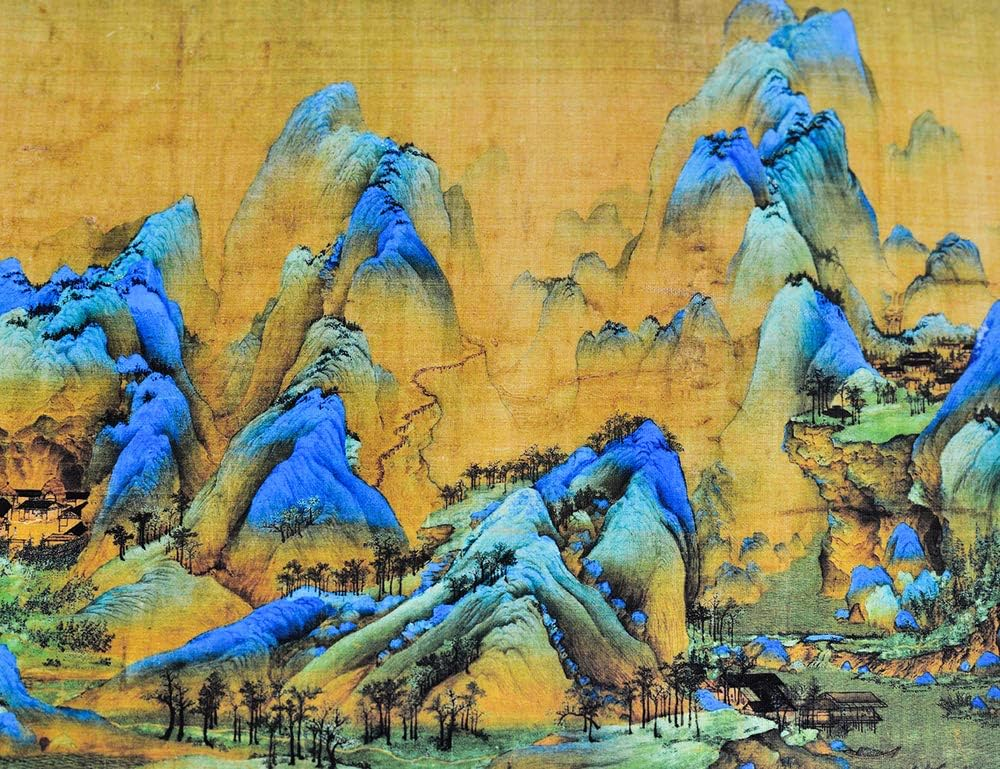

<!DOCTYPE html>
<html lang="en"></html>

<head>
    <meta charset="UTF-8">
    <meta name="viewport" content="width=device-width, initial-scale=1.0">
    <title>My Webpage</title>
    <link rel="stylesheet" href="Css-Files/index-styles.css">
</head>

<body>

    <header>
        <h1>Welcome to My Webpage!</h1>
    </header>

  <section class="about-me">
        <div class="softskills">
            
            <div class="overlay-text">
                <h2>About Me</h3>
                <div class="skills-list">

                    <h3>Self-Driven</h3> 
                    <ul>
                        <li> <strong>Proactive</strong> learner with an <strong>eagerness</strong> to expand knowledge.
                            <ul>
                                <li>Developed various programming projects through persistent <strong>independent</strong> studying and research.</li>
                                <li>Deeply pursue ongoing interests in langages, history, and cultures (e.g through a constant <strong>self-motivated</strong> study of
                                    Cantonese, French, and German).</li>
                            </ul>
                        </li>
                    </ul>
                    

                    <h3>Resilient</h3>
                    <ul>
                        <li><strong>Persistent determination</strong> to overcome, adapt, and <strong>solve</strong> problems.
                            <ul>
                               <li> <strong>Quickly adapted</strong> to a sudden move overseas by training in volleyball during the afternoon and attending virtual class in Canada at night 
                                    (<strong>8:30pm-2:30am</strong> due to the time difference), which was maintained for the <strong>whole year</strong>.</li>
                                <li> Continuous resolve, troubleshooting, and <strong>reflection</strong> when encountering challenges, including debugging attempts during the design of
                                    my projects and pursuing my goals to the end.</li>
                            </ul>
                        </li>
                    </ul>


                    <h3>Perseverant</h3>
                    <ul>
                        <li><strong>Relentless pursuit</strong> of my extracurricular interests while upholding high academic standards, through
                            <strong>strong time management</strong>  abilities.
                            <ul>
                                <li><strong>7</strong> years of consistently adhering to <strong>additional rigorous</strong> training regimens alongside
                                    regular team practices to ensure maximal performance as a competitive volleyball athlete.</li>
                                <li><strong>9 years</strong> of <strong>consistent</strong> and <strong>diligent</strong> violin practice that brought me to participate
                                    in the countrywide Canadian Music Competition.</li>
                            </ul>
                        </li>
                    </ul>


                    <h3>Teamwork/Collaboration</h3>
                    <ul>
                        <li>Firm belief in the value of devoting oneself to the success and <strong>collaboration</strong> of the team.
                            <ul>Through my extensive time as a key player to my teams, fully recognize the symboiotic
                                relationship between the individual athlete and the collective unit.</ul>
                        </li>
                    </ul>
    
                </div>
            </div>
        </div>
    </section>
    
    
    
    
    <section class="hobbies">
        
        <div class="hobby-title">
            <h1>Some of My Hobbies and Interests:</h1>
        </div>

        <div class="all-images">
        <!-- Item Container for volleyball-->
        <div class="item-container" id="volleyball">
            <!-- Initial Display: Image and Subtitle -->
            
            <h2 class="hobby-subtitle">Volleyball</h2>
           
            <!-- Dropdown content initially hidden -->
            <div class="dropdown-container" id="volleyball-text">
                <p>It's true when they say one only learns to cherish something once they're on the brink of losing it. Before Covid-19, volleyball was just another sport that I played unambitiously.
                    Yet when the world fell silent and competitive volleyball in Canada shut down for an indefinite period of time, I suddenly became keenly aware that the sport had already become 
                    an irreplaceable part of my life without my realization. This eventually evolved into a newfound gnawing desire and insistent drive to reach higher stages and play varsity volleyball, 
                    as the notion of leaving the competition in a few short years manifested itself then to be both distressing and unbearable.</p>
        
                <a href="volleyball.html" target="_blank" class="link">Read More</a> <!--link to the full story-->
            </div>
        </div>
        

        <div class="item-container" id="chinese-poetry">
            
            <h2 class="hobby-subtitle">Chinese Poetry</h2>
            <div class="dropdown-container" id="chinese-poetry-text">
                <p> My profound interest in learning languages and studying history started as a fascination towards ancient Chinese poetry and philosophy,
                    which my mom instilled in me since a young age. However, this inevitably made me privy to the countless cycles of destruction on its artifacts
                    and architecture the country has seen, and the further I delved into this part of China's history, the deeper my ache grew for such an unspeakable loss.
                    Somehow, my own personal study of ancient Chinese poetry became an outlet for me to reach out to the dying pieces of a nation's history, and become part 
                    of the efforts to retrace, rebuild, and reconnect a nation to its roots, even if it were just one person at a time. 
                </p>
        
                    <a href="poems.html" target="_blank" class="link">A Project I Recently Started</a> <!--link to the poem website-->
        
            </div>
        </div>

        <div class="item-container" id="violin">
            
            <h2 class="hobby-subtitle">Classical Music and the Violin</h2>
            <div class="dropdown-container" id="violin-text">
                <p>I started playing violin when I was 8. Over the years, I have become enamoured with the instrument and the rich history of composition, where the pinnacle of artistic
                    skill and expression is saturated with such poignant and raw emotion and philosophy. After passing the final RCM Violin Level 10, I set my sights to the annual
                    Canadian Music Competition with participants from across the country, in which I competed during May of 2023 and only just fell short of the score necessary to advance to
                    the next round. Looking back, my musicianship had improved by leaps and bounds during that time frame, I had my first taste of high level music competition,
                    and I was given the opportunity to experience the gathering of so many talented musicians in celebration of the beauty of classical music. I consider the CMC to be a culmination of
                    this long journey I've had in companionship with the violin, and it is far from the end.
                </p>
        
            </div>
        </div>

        <div class="item-container" id="ib">
            
            <h2 class="hobby-subtitle">The IB Program</h2>
            <div class="dropdown-container" id="ib-text">
                <p> The IB program compelled me to learn how to prioritize and manage my scattered time efficiently, for the sake of pursuing volleyball and music whilst maintaining an academic standard.
                    It was a daunting task to juggle the intense academic environment of IB (with demanding courses like HL Math and HL Chemistry) alongside my main extracurriculars, to both of which I dedicated
                    a substantial amount of time. During my final year, I spent hours every day preparing for the Canadian Music Competition and divided the rest of my time between volleyball practice, 
                    fitness training, and studying. The IB program taught me how to utilize the haphazard pockets of time I had between my different engagements with a high level of concentration
                    and productivity. Especially in university, my experience in the IB program and the study habits I've developed evolved into an ever-present and constructive aspect of my academic journey. </p>
        
            </div>

        </div>

        
        <div class="item-container" id="cs">
            
            
            <h2 class="hobby-subtitle">CS Projects</h2>
               
            
            <div class="dropdown-container" id="cs-text">
                <a href="trivia-quiz.html" target="_blank" class="link">Trivia Quiz</a> 
                <a href="webscrapers.html" target="_blank" class="link">Web Scrapers</a>
            </div>
        </div>
            
    </div>
</section>

<script src="Js-Files/index-script.js"></script>

</body>

</html>
